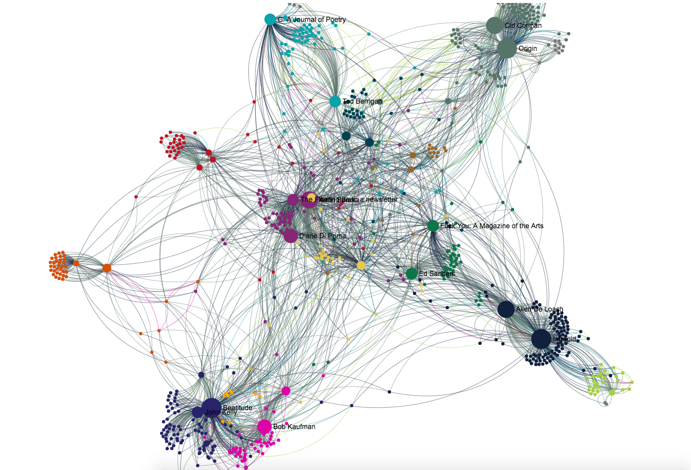

Networking the
New American Poetry
Home
Learn About the Project
Browse the Journals
Meet the Authors
View the Connections
Home
Connections
Journal Contributors
Journal Contributors

Download as GEXF
Download as GraphML
Color by:
detected communities
node/edge type
Color Guide
Nodes
Person
Journal
Place
School
Edges
edited
editor
contributor
co-editor
co-author
translator
translated
Community
* I feel like if we have a color guide for the type we should have one for community but not sure what the data represents or if colors are representative of anything